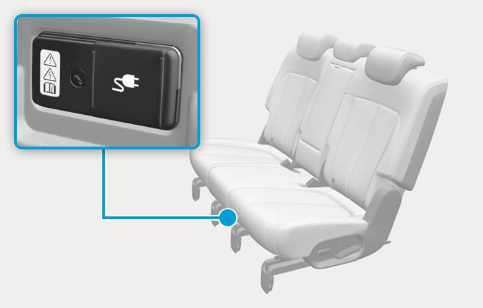
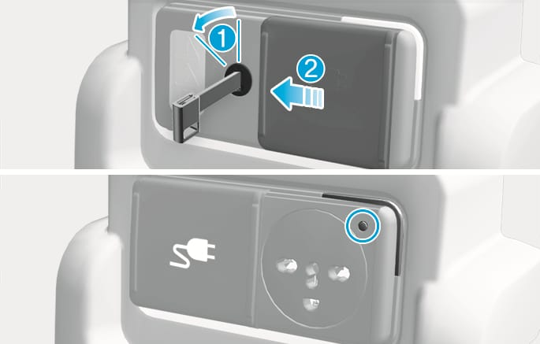

차량 내부에서 전기 사용하기
차량 내부의 전원 패널에 가전 기기 또는 전자 기기를 연결해 사용할 수 있습니다.
차량 내부에서 전열 전기 제품(전기 주전자, 토스터, 다리미 등)을 사용하지 마십시오. 화재 및 부상이 발생할 수 있습니다.
-
차량을 'ON' 또는 유틸리티 모드 활성화 상태로 설정하십시오.
-
유틸리티 모드에 대한 자세한 설명은 '유틸리티 모드 설정하기'를 참고하십시오.
-
-
차량 내부 전원 패널은 뒷좌석 아래에 있습니다.

2C_V2LPosition
-
비상 키를 활용하여 전원 패널 커버의 잠금 장치를 해제(1) 한 후, 전원 패널 커버를 왼쪽으로 밀어서(2) 열고 전원 소켓에 전자 기기의 전원 플러그를 연결하십시오.
-
표시등을 통해 전원 공급 상태를 확인할 수 있습니다.

2C_V2LInsideIndicator
표시등
설명
파란색
사용 대기 상태
빨간색
전원 플러그가 연결되어 있으나 전력 사용 중 아님
녹색
전원 플러그가 연결되어 정상적으로 전력 사용 중
-
전기 사용 중 시동을 끄면 전기 사용이 중단됩니다.
-
실내에서 전기 사용 중 충전 도어를 열거나 V2L 커넥터를 차량의 충전 인렛에 연결하면 차량 내부의 전기 사용이 자동으로 중단됩니다.
-
차량 내부와 외부에서 동시에 전기를 사용하려면 V2L 커넥터를 충전 인렛에 연결한 후 실내에서 전기를 사용하십시오.
-
고전압 배터리 충전량이 설정한 방전 제한량(%)에 도달하면 전기 사용이 중지되며 클러스터에 경고문이 표시됩니다. 전기 사용을 계속하려면 방전 제한량을 현재 배터리 충전량보다 낮게 설정하십시오.
-
방전 제한량에 대한 자세한 설명은 '전기 사용(V2L) 기능 활용하기'를 참고하십시오.
-
경고문에 대한 자세한 설명은 '경고등 및 표시등 확인하기'를 참고하십시오.
-
-